Para entender qué es un backup incremental, repasemos los que es un backup completo. En el backup completo se hace copia de todos los bloques de datos. En la imagen, se puede observar que se le hace copia a los 3 bloques de datos que tiene la base de datos en ese momento.
En RMAN, cuando vamos a hacer un backup completo, con la intención de relacionarlo con una serie de backups incrementales posteriores, se hace un backup denominado Incremental de Level 0.
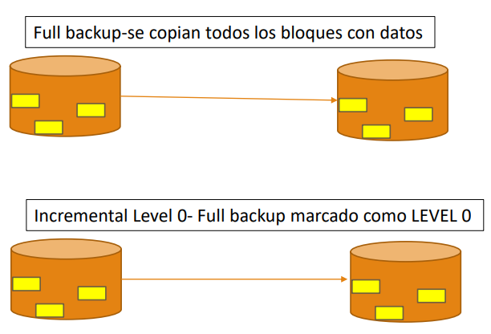
En Oracle, un backup incremental es una copia de los datos que se han actualizado desde el último backup hecho. Por eso, un backup incremental tiene un tamaño mucho menor a un tamaño completo.
Existen dos tipos de backups incrementales:
- Acumulativo - Level 1: Hace copia de los bloques modificados desde el último incremental de Level 0.
- Diferencial - Level 1: Hace copia de los bloques modificados desde el incremental.
Generalmente, un backup acumulativo es de tamaño mayor a uno diferencial.
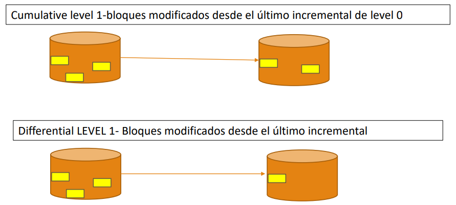
En la siguiente imagen se ve un ejemplo de una política de backup, donde se combinan backups completos, acumulativos y diferenciales. Vamos a suponer que un domingo por la noche se hace el backup completo (FULL BACKUP LEVEL 0), el lunes, martes y miercoles se hace un backup diferencial, el jueves se hace un backup acumulativo, el viernes y sabado se hace un backup diferencial. Esa podría ser la política de backup semanal para una base de datos.
En este caso, es bueno explicar que cuando el jueves se hace el backup acumulativo, los 3 backups diferenciales anteriores a él ya no sirven para nada. Esos 3 backups ya están incluidos en el acumulativo hecho.
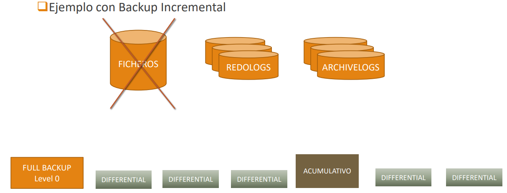
Supongamos que tenemos dicha política de backup y el sábado en la mañana se dañan los Data Files de la base de datos. Lo que se hace para recuperar la base de datos hasta el momento del daño es lo siguiente:
Se restaura el FULL BACKUP LEVEL 0 hecho el domingo anterior, luego se le restaura el backup acumulativo hecho el jueves, y a esto se le restaura el backup diferencial del viernes. Hasta ahi, tenemos restaurada la base de datos a como estaba el viernes en la mañana. Para recuperar los datos que habían entre este último backup diferencial y el momento del daño, se restauran los datos de los Redo Log Files y los Archivelog. Este proceso se va a ver, en detalle, el el módulo de Restores.
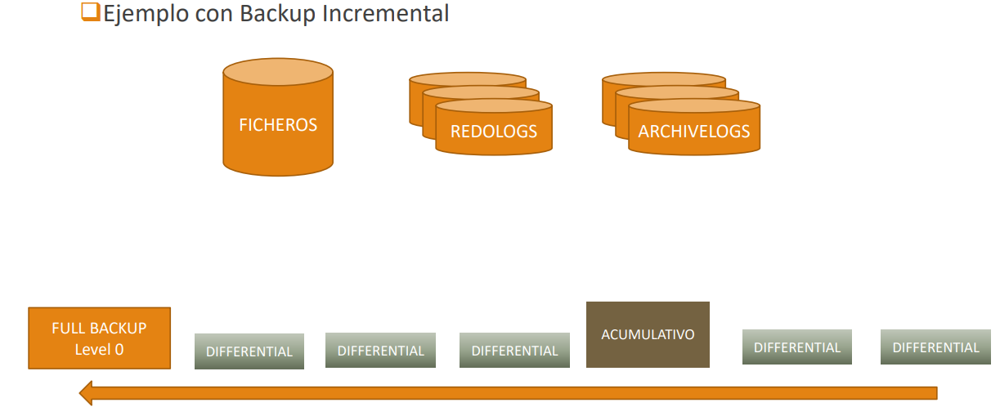
Ahora hagamos ejemplos de backups incrementales en RMAN:
Para ambientar el ejemplo, ejecutemos las siguientes instrucciones:
CREATE TABLESPACE DATOS DATAFILE 'C:\app\jorgebedoya\oradata\CURSO1\DATOS.DBF' SIZE 500M;
CREATE TABLE EJEMPLO(
CODIGO NUMBER GENERATED BY DEFAULT ON NULL AS IDENTITY,
DATOS VARCHAR2(100))
TABLESPACE DATOS;
INSERT INTO EJEMPLO(DATOS) VALUES ('AAAAAAAAAAAAAAAAAAA');
begin
for i in 1..20 loop
insert into ejemplo(datos) select datos from ejemplo;
end loop;
commit;
end;
Luego de ejecutar las anteriores instrucciones, miremos con cuantas tuplas quedó la tabla EJEMPLO:
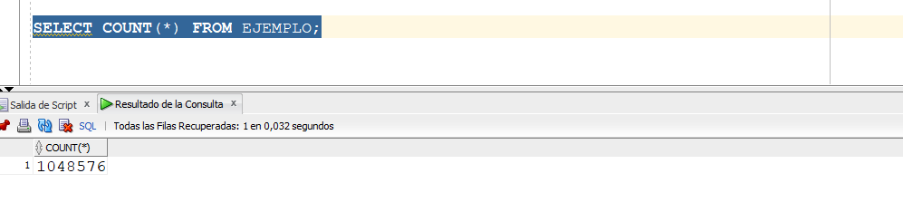vamos a Ahora, vamos a hacer un primer backup de LEVEL 0.
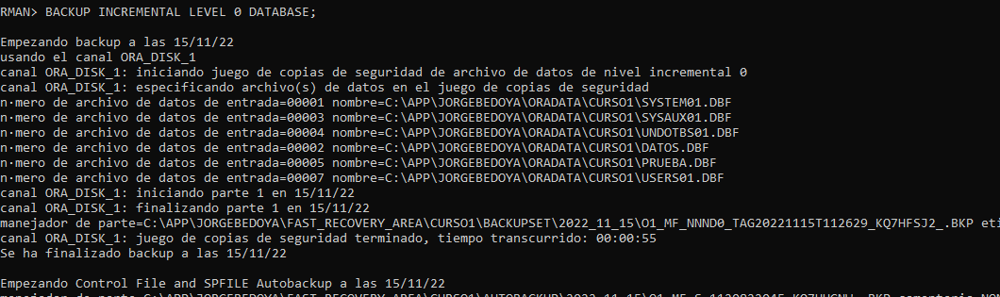
Podemos observar que efectivamente Oracle identifica dicho backup como incremental nivel 0, y que dentro del backup hecho está la copia al Data File del tablespace DATOS, DATOS.DBF.
Al hacer un LIST BACKUP, también podemos verificar que el backup es incremental de nivel 0.
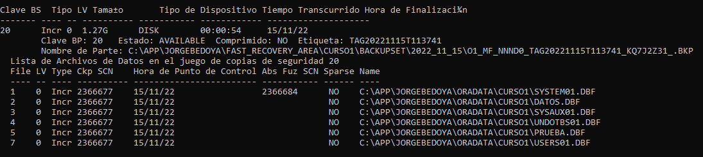
Ahora, a la tabla DATOS, le vamos a insertar nuevas tuplas, ejecutando el script anterior, pero solo dos veces.
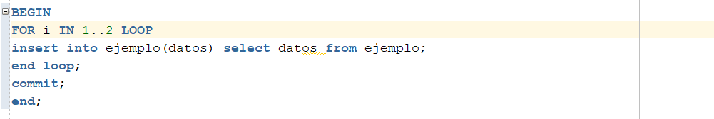
Lo anterior lo hacemos para simular trabajo entre un backup level 0 y el primer diferencial.
Al hacer COUNT(*) de las tuplas de la tabla EJEMPLO, obtenemos:
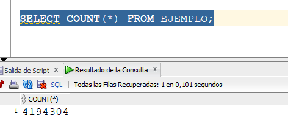
Ahora, hagamos un primer backup diferencial, es decir, LEVEL 1.
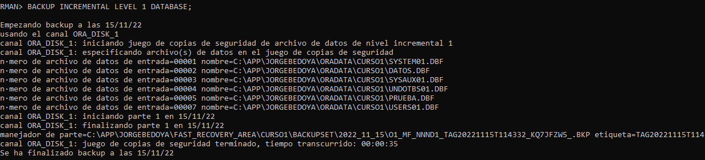
Podemos notar que se ha demorado menos en hacer el backup.
Vamos a comparar el tamaño de este backup diferencial, con respecto al completo. Lo hacemos con LIST BACKUP.
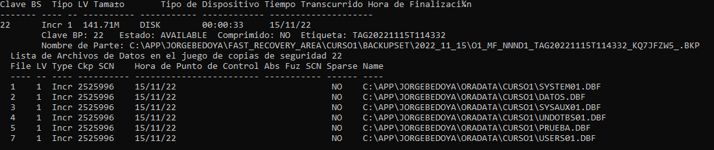
Como podemos observar en las dos imagenes anteriores, mientras el backup completo mide 1.27 gigas, el backup diferencial mide 141.71 megas. Y también se puede observar que el último backup es de tipo incremental, level 1, y el anterior es incremental, level 0.
Vamos a actualizar 1000 tuplas de la tabla EJEMPLO, ejecutando la siguiente instrucción:
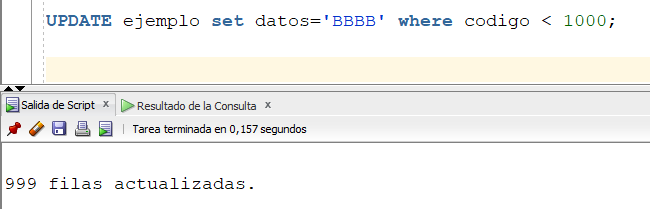
Y hagamos un backup de tipo acumulativo.
lLuego hagamos un bacakup ACUMULATIVO:
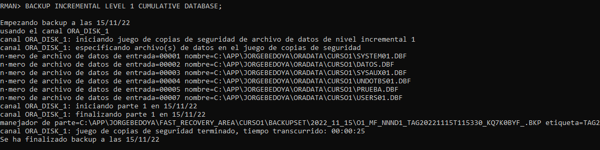
Comparemos el tamaño de este backup acumulativo con respecto al diferencial:
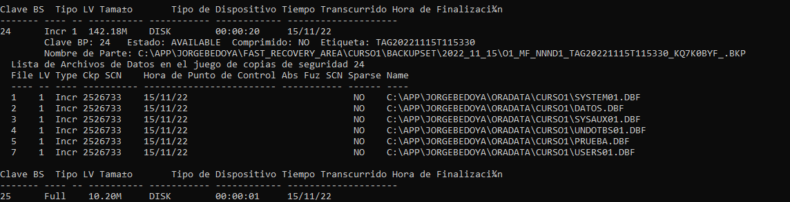
Podemos observar que el acumulativo tiene un tamaño mayor al diferencial. En este caso, es poca la diferencia, pero es porque no hemos hecho mayores cambios entre el último diferencial y el acumulativo.
Ahora hagamos de nuevo un DIFERENCIAL.
El tamaño de este último backup es muy pequeño ya que no se ha hecho nada desde el último backup. En la imagen siguiente, podemos observar que dicho backup mide 280 kilobyes.
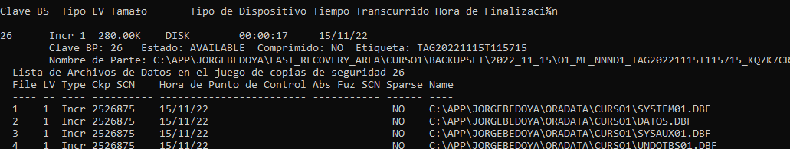
Hasta ahora, en el ejemplo, se ha hecho lo siguiente:
- FULL LEVEL 0
- DIFERENCIAL
- ACUMULATIVO
- DIFERENCIAL